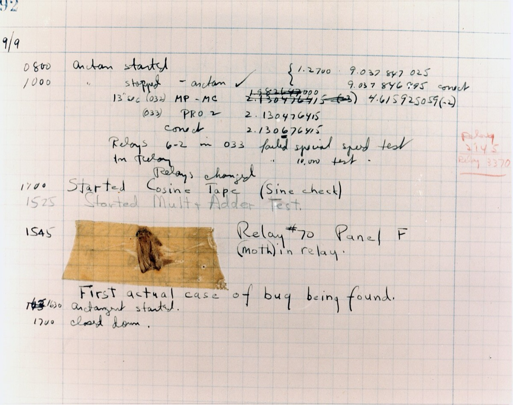

Articles we found interesting.
-

Wat is software testen?
A short intro to software testing. It explains what testing is, why it matters, and which kinds of testing there are.
Photo: the first computer bug, 1947 (U.S. Naval Historical Center, public domain)
-
Software Testing: Complete Beginner's Guide
A beginner's guide to software testing. It explains what testing is, the different ways to test, and who does what in a testing team.